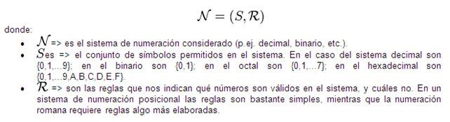

Un sistema de numeración es un conjunto de símbolos y reglas de generación que permiten construir todos los números válidos en el sistema.
Cualquier sistema consta fundamentalmente de una serie de elementos que lo conforman, una serie de reglas que permite establecer operaciones y relaciones entre tales elementos. Por ello, puede decirse que un sistema de numeración es el conjunto de elementos (símbolos o números), operaciones y relaciones que por intermedio de reglas propias permite establecer el papel de tales relaciones y operaciones.
Un sistema de numeración puede representarse:
Estas reglas son diferentes para cada sistema de numeración considerado, pero una regla común a todos es que para construir números válidos en un sistema de numeración determinado sólo se pueden utilizar los símbolos permitidos en ese sistema.
Los sistemas de numeración pueden clasificarse en tres grupos que son:
En los sistemas no-posicionales los dígitos tienen el valor del símbolo utilizado, que no depende de la posición (columna) que ocupan en el número.
Por ejemplo, el sistema de numeración egipcio es no posicional, en cambio el babilónico es posicional. Las lenguas naturales poseen sistemas de numeración posicionales basados en base 10 o 20, a veces con subsistemas de cinco elementos. Además, en algunas pocas lenguas los numerales básicos a partir de cuatro tienen nombres basados en numerales más pequeños
En los sistemas no-posicionales los dígitos tienen el valor del símbolo utilizado, que no depende de la posición (columna) que ocupan en el número. Entre ellos están los sistemas el antiguo Egipto, el sistema de numeración romana, y los usados en Mesoamérica por mayas, aztecas y otros pueblos.
El sistema Romano. El sistema de numeración romana se desarrolló en la antigua Roma y se utilizó en todo su imperio. Es un sistema de numeración no posicional, en el que se usan algunas letras mayúsculas como símbolos para representar los números.
Los romanos desconocían el cero, introducido posteriormente por los árabes, así que no existe ningún símbolo en el sistema de numeración romano que represente el valor cero.
Sistema de los números romanos no es estrictamente posicional. Por esto, es muy complejo diseñar algoritmos de uso general (por ejemplo, para sumar, restar, multiplicar o dividir). Como ejemplo, en el n´mero romano XCIX (99 decimal) los numerales X (10 decimal) del inicio y del fin de la cifra equivalen siempre al mismo valor, sin importar su posición dentro de la cifra.
El número de símbolos permitidos en un sistema de numeración posicional se conoce como base del sistema de numeración. Si un sistema de numeración posicional tiene base b significa que disponemos de b símbolos diferentes para escribir los números, y que b unidades forman una unidad de orden superior.